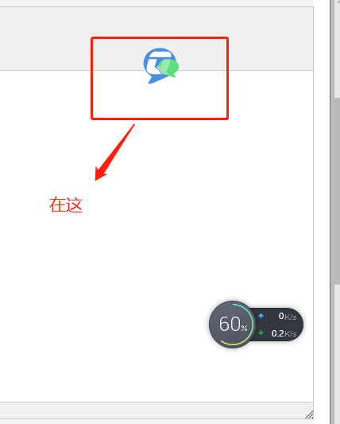
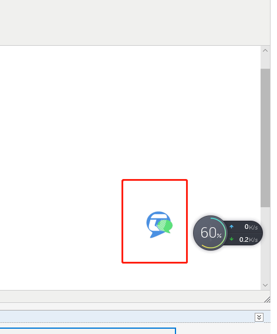
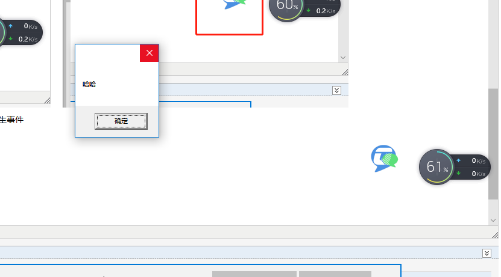
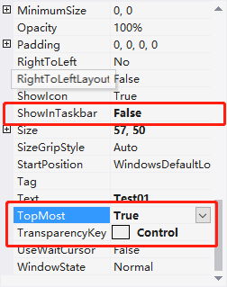
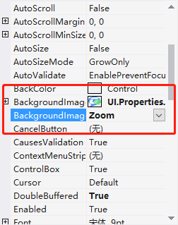

原文出处:本文由博客园博主水心镜台提供。
原文连接:https://www.cnblogs.com/chuangqing666/p/11102024.html
原文连接:https://www.cnblogs.com/chuangqing666/p/11102024.html
先看效果：

这个小图标可以进行随意拖拽，点击还可以产生事件

随便演示一下，效果就是这样的。
下面直接演示如何制作：
新建一个窗体，设置窗体的FormBorderStyle为None(去掉窗体边框)；
调整窗体的大小，和你的图标差不多大小就行，至于动态图，还在测试中，图标必须是没有背景的，因为有背景的图片展示出来，即时窗体透明，也会显示图片的白色背景，会很丑，所以要选没有背景的图片，可以网上找到之后自己拿ps把背景去掉，记住这里是图片背景，不是窗体背景！
窗体背景一般默认BackColor为Control，可以不用改，
去属性中将TransparencyKey改为Control，也就是和窗体背景颜色一致的背景色就行了，这样整个窗体就透明了，在窗体的BackGroundImage中设置你找的无背景图片，要是太大，就把BackGroundImageLayouyt设置为Zoom
将ShowInTaskBar改为False（不会产生任务栏图标）；
一定要设置TopMost为True（始终置顶）；

设置好上面的就开始敲代码了
具体代码如下


1 using System;
2 using System.Collections.Generic;
3 using System.ComponentModel;
4 using System.Data;
5 using System.Drawing;
6 using System.Linq;
7 using System.Runtime.InteropServices;
8 using System.Text;
9 using System.Threading.Tasks;
10 using System.Windows.Forms;
11
12 namespace UI
13 {
14 public partial class Test01 : Form
15 {
16 public Test01()
17 {
18 InitializeComponent();
19 }
20 //设置按鼠标移动窗体，调用外部接口
21 [DllImport("user32.dll")]
22 public static extern bool ReleaseCapture();
23 [DllImport("user32.dll")]
24 public static extern bool SendMessage(IntPtr hwnd, int wMsg, int wParam, int lParam);
25 private void Test01_MouseDown(object sender, MouseEventArgs e)
26 {
27 if (e.Button == MouseButtons.Left)
28 {
29 Form form = sender as Form;
30 Point point = form.Location;
31 ReleaseCapture(); //释放鼠标捕捉
32 SendMessage(Handle, 0xA1, 0x02, 0);
33 if (form.Location == point)
34 {
35 MessageBox.Show("哈哈");
36 }
37
38 }
39 }
40 }
41 }
可能前面有点啰嗦，希望大家不要责怪，因为我是怕新手拿到代码不知道怎么用，因为我也是从新手过来的，我也是个新手，深有同感。
希望能仔细看一下本课题中是如何处理在mousedown中式如何处理判断是点击还是拖动的，因为这个可能在以后会用到，这个问题我本人在网上查了好久都没有找到解决办法，然后自己想通过判断位置是否改变来实现的。
转载请注明出处，谢谢，我不太会排版，抱歉。这是原创的第一篇博客，请大家见谅！